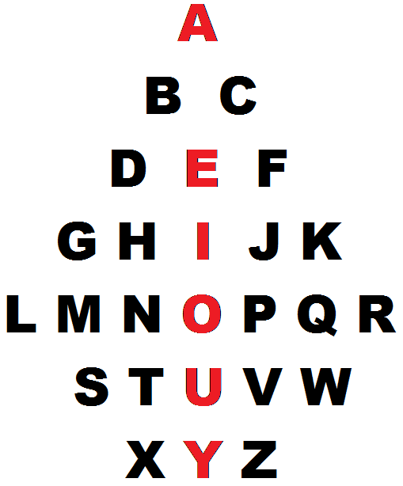

ABCD V.2.5 IN ENGLISH
The Three Fates or, some say,
Io the sister of Phoroneus, invented
five vowels of the first alphabet,
and the consonants B and T1
pic.1
(early forms of the alphabet don’t
include the last line2, archaic latin adds only V to that3)
In this
article it’s shown that the letters in alphabet stand not occasionally but
according to their articulatory (and, probably, semantic) features.
So, vowels
break the alphabet into similar lines of the vOwel-laBial-Linguals4
(pic.1) the exceptions of J, M & Y are
explained further on. (laBials are the letters, representing sounds pronounced
with lips, Linguals are the letters, representing sounds pronounced with
tongue, vOwels are the letters, representing sounds pronounced with mere voice.
Though for proper pronounciation of O &
especially U we need to use lips (& that’s why U is burning blue
underneath), just as for E & I tongue is used, but that’s yet an excessive
rectification (because we base our research upon the myth presented as an
epigraph to the work)
In this
edition of the article this structure is verified with latin, greek, jewish,
russian & persian alphabets. Though it’s also verified with georgian alphabet, with
armenian it’s not. Please understand the conscious naming nations in
minuscule – for nations bring nothing but nationalism which brings death &
destructions of war, when what humanity needs is automation & complete
autonomy, to make every conscious human seed able of recreating the whole
population & civilization if needed). The
representation of the alphabet as articulatory matrix converges it with the
syllabaries (so, in japanese kana there’s
also 5 rows beginning with vowels & the columns representing the consonant
components of the syllable)
In the
complete accord with the hellenic myth5, extant in the Hyginus’
list, labials & linguals can be juxtaposed with those original B & T.
1
The
position of the Y out of the vowel column was not clear until the following
symmetry was discovered (pic.2).
pic.2
Supposedly
the former system was left for the latter one because of T-part (the linguals)
of rows tending to expand, because of M being replaced with J by theological
reasons (explained on the next page), because of the U-row added to the
alphabet with its Y & stuff2,3.
It also
needs to be noticed that Y is sort of redundant & in the Netherlands they
write it like that:

Y is also named a Latin
Diphthong6
2
How
could the knowledge of the alphabet structures be lost? It quite well could because
of those baboons fighting the world to ruins and murdering the elites
constantly on the one hand & the snobbish segregating celestials like
pretty much myself on the other.
But
the writing system, even being rid of its inner matrix, definitely happened to
be much too useful to get rid of.
Position
of Y out of the vowel column & M-J-misplacement weren’t actually the last
mysteries that were to be solved before this article was brought in this world as
a system, not apophenia. For I couldn’t dare to bring velar & coronal (pic.4)
in one group, as linguals – not even sure if it’s a
proper phonetic term nowadays, for as a rule the linguals are grouped into
several sub-distinguishments7 (but
hardly the creators of the alphabet were that meticulous: after all they told
only about B & T in the myth, thus the introducers of the special forms of
linguals knew about the structure, for they put it in the special place
(backlinguals always precede the frontlinguals each line (even in X letter)), (pic4).
But with this additional itemization it was to be understood why does H stand
where it does & it made sense that it used to be [ʃ] for it’s named ʌʃ
& eitʃ, & Bj`o’rk in Human
Behaviour sings it just like that9.
 pic.4
pic.4
As for why
would J & M stand where they do, it's been found that J stands for Jupiter (the highest patriarchal deity of the romans) (compare
Jovi & Jhvh – first one is another form of
Jupiter (as Bobby for Bobert), the second one is a transliteration of the
highest patriarchal deity of jews) Jah – the same very name of jewish god, as
pronounced by ethiopian rasta) & M stands for international word
Mama8 in all the representations (and as
the highest matriarchal being of the romans as well) (Maat, Minerva, Mokosh, Mara, Maria, Mother-goddess, the
inner urge made me recall Muses (see
representation of alphabets as musical notation (the next page))
3
& their mother Mnemosyne there are also the fates,
who invented the alphabet (according to the
myth in the epigraph), & in greek they
are named (Μοῖραι), also Moira is considered to be a form of the name Mary10
in ireland for example, (מרים) amer comme la
mere) – MM as the female highest deity of the culture that created the
alphabet. So it's considered a patriarchal takeover of the previous
culture. Quod licet Jovi, non licet bovi
& so on. This proverb was mentioned
because cow represents a potent element of “pagan” beliefs11. Not
only because of Veau d’Or, but also because M is for М in milk, & that’s
what a cow says & the “horns” of the letter, though Egyptians wrote an
(horned) owl there, though owl says not Mu, but uM12, which is
“intelligence” in Russian – at first sight it’s unlikely related, though owls
do stand for intelligence13. These reason give bases to
consider M & J being replaced with religious reasons (for in Greek (further
in the article) the same trick Zeus does. Or it might be because M became a
real Mother having given birth to L & N, for these two are lingual, not
labial. Or just because the most of mess happen to take place in the lines of
vowels-division: J & I became different letters (Iovi, Jovi – it’s both
correct, just as V where now we’d use U (as in Maximum for example) – there are
V in many writings14
The latter
explanation is more solid than the former one, because in hebrew alphabet
there’s no j but ’ sign is used for both i&j as it’s historically two forms
of one letter, just as V was used for both U & V &
even W – the W the most not only it stands
between those two both articulatory and phonetically, for the letter is named wow after all for sex is wow! –
that’s very much the form of the letter by the way, the ! & though there’s
no U-line in hebrew for it ends at T, the V letter, the most labial of all the
vowels is strict labial in hebrew & put where the f stands in latin &
for F they used pey, the letter identical to latin p, greek & russian п & so
on. In russia they use the word пей[pei] for “drink”
& пой[poi] for
“sing” & in hebrew פ(peh, pheh) means mouth.
Also the
structure of pra-alphabet, described by Hyginus, tells us that it might be used
as a pentatonica15 with &  for bemol & diez (actually, musical notation is one of few fields where we
need to convey the way it sounds).
for bemol & diez (actually, musical notation is one of few fields where we
need to convey the way it sounds).

The vowels added by the priests of Apollo to his lyre
were probably those mentioned by Demetrius, an Alexandrian philosopher of the
first century BC, when he writes in his dissertation On Style: ‘In Egypt the
priests sing hymns to the Gods by uttering the seven vowels in succession, the
sound of which produces as strong a musical impression on their hearers as if the
flute and lyre were used, but perhaps I had better not enlarge on this theme.’1
Latin
alphabet does not stand alone among other writing systems, it’s a member of a
pretty multitudinous family of alphabets, other
members of which should verify or nullify the system found in the latin
alphabet (though some letters are positioned
differently, will the system persist, is it the real system or just an
apophenia?) the found matrix will be verified afterwards as
you’ll be able to see
4
And
supposedly the oldest member of the group among the used nowadays is the hebrew
alphabet: it includes only the first four lines of
the alphabet, just as was in the ancient forms of the alphabet2 Probably the most of you don’t know the following
examples of alphabets (well, it’s a good time for you to make the research by
yourself & find how they sound from books or internets – so you know the
examples given here are exact.

א ב
ג ד
ה ו
ז ח ט
י כ ך ל מ
ם נ ן ס
ע פ
ף
צ ץ ק ר ש ת
Hebrew alphabet
shows the same structure: vOwels-Beths-Taws with same M-displacement as in latin. But in hebrew alphabet I & J didn’t devide in two
different letters, but there’s י, standing for both of them, which also stands for something
more, which is יהוה
(that very patriarchal highest deity of jews)). the word
is read right to left (jews & arabs write right to left as if their zadiks were
left-handers.
Though
jewish letters are considered all-consonants, four of them are closest to
vowels (and traditionally are transliterated into
other languages with vowel letters: so ה, which became voiceless in arabic, in hebrew makes that –a
ending which sounds quite vowel indeed.
In
hebrew alphabet there’s not a trace of any positional distinguishing of back
linguals from front linguals (none of obvious back-linguals: ג, כ, ק stand in the same column as c,g,k,q did) which
makes jebrish alphabet closer to the supposed origin (where only b & t are,
not a word about k – notions about this interesting letter, having appeared in the
previous version now are extorted into a stand-alone article).
Though
its consisting of four lines only takes it even beyond the myth, for in myth
there are five vowels, which means hebrish was canonized before
vowel went out of ו for it stands in the obvious labials’ column
with ב & פ in it & the only one missing is the very M(מ)
5

The axial symmetry can
be also found in the hebrew alphabet & ain’t it a funky one!
6
pic.7
Α Β Γ Δ α β
γ δ
Ε
Ζ Η Θ
ε
ζ η θ
Ι Κ Λ Μ Ν Ξ ι κ λ μ ν ξ
Ο
Π Ρ Σ Τ ο π
ρ σς τ
Υ
Φ Χ Ψ
Ω υ φ χ ψ ω
Greek
Alphabet contains the AEIOУ-system too, but it is
even more disturbed there (not only in I-line the reforms took place (the removal of M off the labials’
column), but also in E-line now-lingual
θ (theta) (of which russian θ (фита, fita) descends
& it sounds quite like F (which in latin appears in this very line) – this two points allow to suppose that a thousand years ago (if the dating of the adaptation of greek for russians is
correct, of course) greek θ was pronounced
as f) removed off the labials’ column with
letter ζ, which, all of the sudden, also stands for the supreme
patriarchal deity’s name, but Zeus, that
once used to start with this letter: Ζεύς, today is put down as Δίας, which is,
surprisingly translated as Jupiter, and hardly is it by an accident, that in latin
God is Deus, which sounds quite as Δίας, and this
probably
a coincidence wouldn't worth mentioning if in latin G didn’t stand in this
very line before h, which is H just as much as η (which is considered
being represented with the [h] sound as in words like Homer), before
which ζ(Ζ) stands. Θεά is also a
word in greek for the goddess, though dictionaries
give θεός for god
sometimes, though Θεά is Фея [feya] in
russian, which means fairy, but a fairy-guy is a little too tender for a god (though in
word “theology” they use just that word). Θεία (name
of the first moon goddess, the sun’s mother) is transliterated as Фейя (Feya). Regarding
θita being obscene16
in old russia it’s possible to assume that its connotation was that of female
genitals (note that ז in hebrew) has a connotation of male genitals)17
Also the
post-inclusions in I-line are of the same amount as in latin, but instead of J
there’s ξ which actually looks
very much like ζ, which in its turn is
the inclusion in the E-line (also they both look & sound very much like
snakes18 - probably the
snake-worshippers had their impact on Hellenic culture in some historic period
(it can be whether verified or falsified by further research) – note that in jewish alphabet there’s neither J (for ’ is
used for both of them
7
I & J sounds) nor ξ thus is
verified its ancient ancestry as of the older writing system than latin &
greek, for it was ceased for centuries before the most reforms took place, though
it itnessed the M-overthrownment - & it doesn’t have no U-line, though the
I & Y are the two most problem lines – for I brought J & U brought V. The name
Ivan/John not only illustrates that (in hebrew o,u,v,w all are
transliterated with the letter ו which is positioned as if it’s not really a
vowel) but also raises the
question of the vowelity of h which somehow appears in the alphabetic position
of semitic ה & ه though it
doesn’t sound all vowel, especially in the arabic version of it,where it sounds
quite like latin h which appears on a vowel branch in 19 also in
greek the word haploid turns out to be απλοιδ
The
position of ω out of the vowel column can
be explained by the axial matrix, though the
probability of such a symmetry for the last line is about 50% (axial symmetry would verify the last line if the vowel
stood at the χ position as well, but not in φ or ψ )
 pic.8
pic.8
H in greek
was considered vowel only in ionic dialect. In every greek dialect, except
ionic, E was followed by F. Doesn’t it look like EЁ in
russian alphabet that comes after the greek one and whether includes or excludes
the letter Ё. Is it
because of some kind of taboo?
8
Though
persian alphabet is often arranged as ا ب پ ت ث ج چ ح خ د ذ ر ز ژ سش ص ض ط ظ ع غ ف ق ک گ ل من ه و ی, the most of the letters have numeric values20
different from this order (which
is given just to see letters arranged to their forms) – just as in
hebrew, where they have built kabbalah upon this concept (the
h at the end of the “kabbalah” word indicates that there’s ה at the end of it (קַבָּלָה), but it sounds pure vowel for me). Having the letters positioned according to their number we can get
the alphabet analogue (so called abjad)

ا ب ج د
ه و ز ح ط
ی ک ل م ن س
ع ف ص ق ر ش ت ث خ ذ ض ظ غ numberless in farsi: پп چч ژж گг
The order of
the letters (till the letter ت inclusive), as in
hebrew, allows us to put ه in the vowel
position also upon the reasons given few lines before (at the
end of the greek part).
9

Russian alphabet having descended
from the greek uncial & though it doesn’t have no obvious labial in the
second line, the letter θ (fita) though was replaced to the bottom of the alphabet before
having been neglet, had the numeral value21 of 9 (which puts it in
the second line) It is related to the one used by kopts – in both there are extra
line after greek
ω-likes
present: and like in russian it goes in cluster
alike to шщ
 pic.12
pic.12
10
 (ʃʌi) not only looks like
russian ш, but also sounds that
way. Probably semitic ש is to blame (though it’s an ancient letter, most probably deriving
from the teeth-ideogram (in hebrew this letter means teeth or a tooth(& not only – well, you can check it yourself for in
the eon of the internet the regulatury dogma is to be reformed)). (the similar letter appears in phoenician & arabic which is named in this work persian or iranian just for
sake of argument)
(ʃʌi) not only looks like
russian ш, but also sounds that
way. Probably semitic ש is to blame (though it’s an ancient letter, most probably deriving
from the teeth-ideogram (in hebrew this letter means teeth or a tooth(& not only – well, you can check it yourself for in
the eon of the internet the regulatury dogma is to be reformed)). (the similar letter appears in phoenician & arabic which is named in this work persian or iranian just for
sake of argument)
The funny
thing is  & remind
russian Ш & Щ, who
follow eachother at the very same position (only 6 letters are until the end)
& remind
russian Ш & Щ, who
follow eachother at the very same position (only 6 letters are until the end)
But
koptic doesn’t support the axial matrix. Only if isn’t
considered vowel which I doubt it does (though I don’t speak koptic to be sure
if it’s ה-like or not)
& it’s H_being_considered_vowel hypothesis repeatedly emerges in this article
in different contexts.
Of all the
alphabets shown above the russian one happens to be the most deviant.
It doesn’t
even fall into the axial matrix properly. (not implying it does
fit the linear matrix)
Georgian alphabet fits
both the matrices properly:

Armenian alphabet
doesn’t fit in any.
11
1 Graves,
Robert (1990) [1955]. The Greek Myths 1. Penguin Books. ISBN 978-0-14-001026-8. (chapter “Alphabet”).
(неточный перевод на русский: http://www.sno.pro1.ru/lib/graves/52/52.htm)
2 Финикийский и друзья http://www.shiachat.com/forum/topic/234964878-tabernacle-is-greater-than-kaaba/?p=1957831 (фриковатый линк, но шикарные иллюстрации: например /forum/uploads/monthly_09_2009/post-25505-1252265968176.gif
3 Архаичная
Латынь
http://www.codex99.com/typography/15.html
(иллюстрация:
http://www.codex99.com/typography/images/ancient/latin_sign.gif)
4 В
доказательство того, что даже k является язычным, приложена рентген-фотография.
найдено в http://ling.cass.cn/yuyin/english/yinlu/pic.htm
5 отрывок из Гигина на латыни http://www.mediterranees.net/mythes/ulysse/guerre_troie/palamede.html
(в этой работе, тем не менее, за основу взят миф в записи Роберта Грейвса1,
не только потому, что он в большей степени совпал с уже обнаруженными
закономерностями, но и потому, что миф в записи Гигина явно неточен (слово septem
(семь) не соответствует количеству представленных букв)
6 http://www.scribd.com/doc/154567093/Encryption-and-Decryption-of-the-Alphabetical-Hieroglyphs (Y)
7 Фонетический алфавит http://www.yorku.ca/earmstro/ipa/consonants.html
8 Try & take
John 1:1 as a riddle with that word
9 Coronal ʌʃ http://www.youtube.com/watch?v=GCGveA39VYA
10 Mary http://en.wikipedia.org/wiki/Mary_(given_name)
11 Io (мифология) https://en.wikipedia.org/wiki/Io_(mythology)
12 Сова говорит уM http://www.youtube.com/watch?v=dZ_QguAsVTA
13 Сова Афины http://en.wikipedia.org/wiki/Owl_of_Athena
14 Roman square capitals http://upload.wikimedia.org/wikipedia/en/2/21/Trajan_inscription_duotone.jpg
15 the best text i could
find on hellenic music http://www.gutenberg.org/files/40288/40288-h/40288-h.htm
16 Гоголь «Мёртвые Души» http://feb-web.ru/feb/gogol/texts/ps0/ps6/ps6-005-.htm
(сноска в конце страницы)
17 ז
http://en.wikipedia.org/wiki/Zayin
18 ξ hiζζeζ http://www.youtube.com/watch?v=jT6qZpdGeIw
19
(from 6) http://htmlimg3.scribdassets.com/3wa9zw4i9s37sugu/images/3-d10cae70ff.png
20 Числовые значения персидского алфавита http://bahai-library.com/images/g/gail_guide_transliteration_big.gif
21 Числовые значения русского алфавита http://genobooks.narod.ru/Azbuka/Azbuka-5.gif
(небезынтересен девятый номер в глаголице) http://histans.com/EHU/Hh/Glagolycya.jpg
ABCD (VOWEL-LABIAL-LINGUALS AS THE
ALPHABETS’ MATRIX)
Dmitry Okolnikov
12
{kind=link}
{kind=link}
{kind=link}
{kind=link}
{kind=link}
{kind=link}
{kind=link}